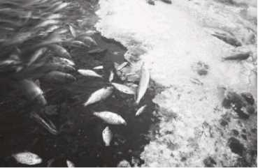
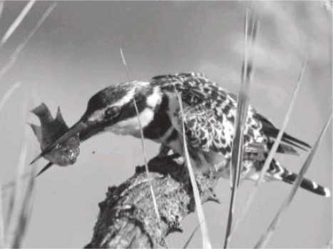

Mortality in fish production ponds has been considered an essential parameter in understanding the dynamics of any population. Mortality, in general perspective, is synonymous to loss of life. In aquaculture, without knowledge and enough understanding of how fast fishes are removed from a set of population, it is impossible to identify the population dynamics within the pond.
Fish mortality is categorized into two types:
1. Natural mortality refers to the loss of population from natural sources, which occurs after stocking. This is mainly due to stress, predation, old-age, diseases, and in-pond water quality deterioration.
2. Fishing mortality refers to the loss of population from external factors such as the fishing activities done in the pond, which affects the survival rate of aquatic species.
The mortality rate among ponds will vary depending on the size and number of aquatic species, particularly fishes. A dead fish may float for several days in warm water or may sink immediately after dying in cold weather.
Dead fish have three important environmental concerns:
1. If outflow of water occurs, carcasses and associated bacteria may be released to the ponds.
2. The decomposition period of dead fish could impair in-pond water quality and cause effluent water quality to decline.
3. The bad smell from large fish kill could be a problem at the surrounding areas.
Fish kill is common in any aquatic environment. It happens unexpectedly over a short period of time involving a large number of dead fish. The following are factors that contribute to fish mortality:
A. Natural Causes of Fish Mortality
1. Oxygen depletion
Dissolved oxygen levels are dependent on the following:
a. temperature
b. pond depth
c. water movement
d. productivity
e. fertility
Oxygen depletion in aquatic environment happens when there is an imbalance in the natural nutrient cycles. For instance, fish farmers who over-fertilize the fishpond and place high nutrient levels from feeding causes oxygen depletion and even, fish kills.
Fish can be killed for a couple of hours in an environment where the level of oxygen is lower than 1mg/l. Fish farmers need to be alert during summer months because phytoplankton bloom on water with high temperature. This causes the aquatic environment to acquire low dissolved oxygen that could lead to fish mortality.
Aquatic plants and animals use oxygen and release carbon dioxide in respiration. Phytoplankton is responsible for producing oxygen for aquatic plants and animals by getting enough sunlight. However, when clouds block the sun for over a period of days, this reduces oxygen production levels. Fish farmers should know that oxygen levels are at its lowest just before sunrise, wherein, fish are prone to die.
2. Presence of toxic algae
When nutrient competition becomes intense, some species of algae release toxic substances into the water. The toxins produced by algal species can kill other algae that results in an algal population made up of large numbers of toxin-emitting species.
Algal toxins are not produced by external sources. They naturally occur. Toxic algal blooms, harmful algal blooms (HABS), and red tides are naturally occurring in any aquatic environment. There may be times that human activities can contribute to the increased toxins.
3. hydrogen sulfide
Hydrogen sulfide is not only dangerous to aquatic animals but also to humans. This can cause serious health risk and even death, if inhaled by humans.
Hydrogen sulfide is a toxic gas that is commonly found at pond bottoms. It came from different sources such as organic matters (e.g. fish waste, tree parts, and dead dish), chemicals containing sulfur, and mixture of salt water, among others. For instance, when organic matters build up, they create a thin black mud, that when turnover occurs, releases hydrogen sulfide gas that smells like a rotten egg. A turnover happens when the surface water mixes with water near the bottom.
4. Mortality due to bacteria or parasites
All aquatic animals are vulnerable to disease-causing bacteria, viruses, and fungi. It can also be infected by parasites such as lice, tapeworms, and leeches. These organisms are found at low levels in aquatic environment with limited number of fish. Massive fish kill is seldom caused by these organisms. Diagnosing bacterial infections are difficult to do. However, these may appear as bloody rings or streaks on the skin or at the edges of fish scales.
Fish mortality due to parasitic infections begins slowly with only one or few fish each day. As parasites multiply, the number of dead fish continue to increase over time. It will only cause severity in mortality rate of fishes when the aquatic environment is crowded, when most of the aquatic animals are stressed or starving, and when the temperature or the level of chemical toxins are high.
B. Unnatural causes of fish mortallity
1. Pesticides
In agricultural areas, pesticide runoff has been known to kill fishes. When the newly applied pesticides are washed off by the rain into the ponds, lakes, or streams, its concentration level can be dangerous to aquatic animals, especially when it reaches the lethal level. Pesticides that are improperly applied to aquatic organisms also lead to fish kill. Some of the signs of fishes affected by pesticides are spinal curves, dark reddish discoloration, loss of equilibrium, convulsion, and death. Smaller fishes will die first, unlike in oxygen depletion, where larger fishes die first.
For instance, when a pond owner uses pesticides to control ticks and chiggers near the fishpond area, it can easily cause fish mortality. Fish farmers and pond owners need to take extra precautions when applying any chemical, especially near the fishpond area. Factors such as weather and temperature should be monitored. Commonly used herbicides are usually not detrimental to fishes. However, it may render the fishes inedible for human consumption and may prevent livestock from using the water for up to 2 to 3 weeks.
2. Salt water
Different fishes have different water requirements to stay alive. This involves the proper salinity level, pH level, and other parameters. Fish farmers also know that placing freshwater fishes to salt water can kill the fishes and other aquatic animals.
Salt water can come from septic systems, livestock salt licks, and other sources that can enter the pond. To check the saltiness of the water in a pond, fish farmers use chemical test kits. Monitoring the quality of water, such as the salinity level in pond, prevents fish kill.
3. sewage
A poorly maintained septic system or a broken pipe can be a source of a raw sewage that can enter the fishpond and cause fish kill. The sewage is not usually toxic to the fish. However, it consumes the available oxygen as it decays that triggers a low dissolved oxygen, resulting for fish to die.
With the loaded nutrients found in sewage, intense algal blooms may possibly occur. When the algae reach a density sufficient to shade itself out, these would result in a partial or complete die-off of phytoplankton. When this happens, dead phytoplankton decays may use up enough available oxygen to cause a fish kill.
A. Fish Suffocation
1. Do not apply excessive fertilizers.
2. Do not overstock fishes in the pond.
3. Ensure that manure and wastes will not enter the pond.
4. Only one-third of the pond must be treated with herbicide.
5. Emergency surface aerators or pump sprays should be installed.
6. Conduct a regular water quality test.
B. Fish Diseases and Parasites
1. Stock healthy fishes.
2. Regularly monitor the health of the fish.
3. Separate the different aquatic animals and then, exclude all the wild fishes.
4. Prevent any transfer of fish from other ponds.
5. Monitor and follow the recommended stock fish population.
6. Avoid stressing the fish and other aquatic animals.
7. Monitor the water quality.
1. Virus
a. Disinfect and sanitize the equipment and facilities.
b. Destroy the infected population to avoid the contamination of other stocks.
c. Install filtration or sanitizing system.
d. Immediately report any viral outbreak to concerned persons.
2. Bacteria
a. Apply disinfectants on a regular basis.
b. Sustain optimal growth conditions.
c. Remove the sources of stress.
3. Fungal disease
a. Minimize physical injuries while handling, particularly during stocking, transporting, transplanting, and harvesting.
b. Handle the eggs with care.
c. Fishes should be at their best possible conditions.
4. Parasites and pests
a. Ensure a clean water supply.
b. Provide a pathogen-free food.
c. Maintain hygienic practices in the area.
d. Separate the different aquatic animals and then, exclude all the wild fishes.
e. Do not stress the fish and other aquatic animals.s
f. Avoid overcrowding the pond.
g. Install a good filtering system for water intake.
1. Water flow should be increased.
2. The pond should be flushed with clean, fresh water.
3. Stale and bottom water should be pumped out.
4. Surface water should be aerated.
5. Dead and dying fishes should be removed.
6. Decomposing weeds and organics should be removed.
In establishing an aquaculture facility such as fishpond, it is important for fish farmers to consider the volume of the stock they have on-site and their capacity to manage mortalities. Here are the proper ways on how to dispose dead fishes and other aquatic animals
1. Composting is a controlled biological treatment that transforms aquaculture mortalities into a valuable on-farm resource. If a fish farmer intends to use this method, the site must be far away from surface water to avoid pond contamination. To facilitate the breakdown of the shell of mollusks and crustaceans, crushing them prior to composting is recommended.
2. Reusing or recycling does not harm the environment. Fish carcasses can be used as fertilizers and shells from shellfish can be used to create useful handicraft products. However, this method is not appropriate when the cause of death of aquatic animals are due to certain diseases.
3. Rendering refers to the heating process that extracts usable ingredients such as protein meals and fats. This method must be undertaken by a licensed professional.
4. Waste depot (landfill) is done by depositing fish carcasses in a licensed waste depot. Dead stocks must be stored and transported appropriately.
5. On-site burial is usually a preferred option for fish farmers. This is quick and can be achieved easily. The quantities of dead stock, proximity to surface water and groundwater, location of the site, and permeability of soil should be considered by fish farmers who are using this method.
6. Cremation or burning is only considered if the disposal of aquaculture mortalities using the other methods like composting and recycling are not part of the options. This method generates air pollution. Other materials such as sawdust, paper, and timber off cuts may need to be added to assist the burning process. Shellfish are not suitable to burn because of their hard shells. Burning aquatic animals in small quantities may be appropriate in some circumstances. However, fish farmers need to ensure that the process will not create an environmental nuisance like air pollution and bad odors to neighboring properties.
A predator is an animal that preys on aquaculture species like fishes, mollusks, and crustaceans. It can cause damages to farm facilities directly or indirectly. Direct damage is manifested when the fish or other cultured organisms are killed or seriously damaged by the predator and lost from the production. Indirect damage includes non-lethal wounding of fish; chronic stress with a consequent reduction in feeding efficiency or health; transfer of harmful disease- causing organisms, like bacteria, viruses and parasites; and sometimes, even physical damage to aquatic animals.
1. Birds are the major reasons of fish loss at aquaculture facilities. These can have a significant economic impact on operations. Aside from attacking the fish, these predators can injure fish, disrupt the feeding activity, disturb the bloodstock, and contribute to the spread of diseases and parasites in aquaculture ponds. Normally, these predators attack in open water and high fish stocking densities at aquaculture facilities.
2. Fishes also attack other fish stocks that causes much stress. It is suggested to use screens in the inlets and the outlets. Periodical pond draining is advised.
3. Frogs and toads usually attack juvenile tilapia and catfish. To avoid these predators, clearing the bushes around the area is recommended.
4. Insects and insect larvae attack juvenile fish, eggs, and fish that just hatched. As a control measure, fish farmers are advised to use fish that feed on insect larvae like those that have gills and can remain at the bottom.
5. Human (theft) attacks all types of fish in the pond and considered as one of the major fish predators. Human attack is mostly common in cage culture and other intensive fish farming. However, it can be controlled through employing security personnel, use of trained dogs, and fencing of the farm.
6. Snakes destroy larval and juvenile fish. To avoid these predators, fence properly and clear the bushes around the pond. As a fish farmer, it is your responsibility to know the possible predators in your pond. This will ensure fresh, quality fish harvests that are not injured and of good market value aside from the benefit of earning high income because of good harvest returns.
In an aquaculture establishment, disinfection is employed as a disease management tool. The disinfection of aquaculture establishments involves chemical treatment application and sufficient concentrations for a specific period of time in order to kill pathogenic organisms that have a direct contact with the surrounding water systems.
It is difficult to disinfect permeable surfaces as this requires more time. The disinfection capacity of most disinfectants is reduced due to the presence of organic matter. It is recommended to filter influent water.
Prior to disinfection, all surfaces must be thoroughly cleaned. The detergents and disinfectants to be used should be compatible with the surface being treated, and the wastes produced from washing should be disinfected before disposal. Procedures of disinfection should be established and used based on the objectives of disinfection and risks. Remove all aquatic animals from the pond, either dead or alive. Diseased aquatic animals should be harvested or humanely killed prior to disposal.
The following are stages of washing and disinfecting an aquaculture facility:
1. Removing of solid waste
2. Prewashing
3. Deep cleaning and washing
4. Disinfecting
5. Rinsing
Before washing and disinfecting an aquaculture facility, fish farmers must wear appropriate body protections such as face mask, eye protections, and gloves. Store the disinfectants properly and ensure that no direct or indirect danger to animal or human health and the environment will be involved.